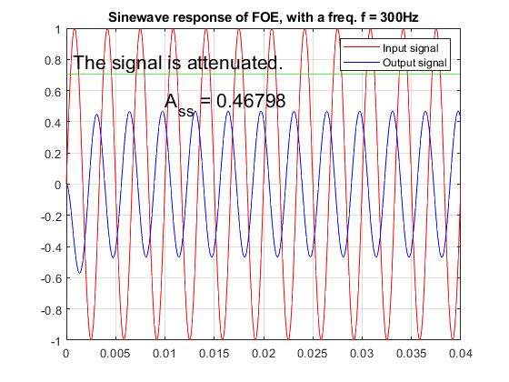
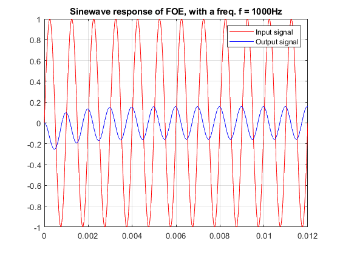

Contents
Generating the plot of a response to a sine signal of a tf
close all; clear all; clc;
R1 = 1e3;
R2 = R1;
C1 = 1e-6;
f = 1e3;
T = 1/f;
w = 2*pi*f;
t = 0:T/50:12*T;
H = tf(-R2/R1, [R2*C1 1]);
u = sin(w*t);
lsim(H,u,t)

Ploting it more beautiful
y = lsim(H,u,t);
plot(t,u,'r',t,y,'b');
legend('Input signal', 'Output signal');
title(['Sinewave response of FOE, with a freq. f = ', num2str(f), 'Hz']);
grid;
shg

we will be focusing on the amplitude difference on the following laboratos
ap1(H,300);
effect_str =
'The signal is attenuated.'